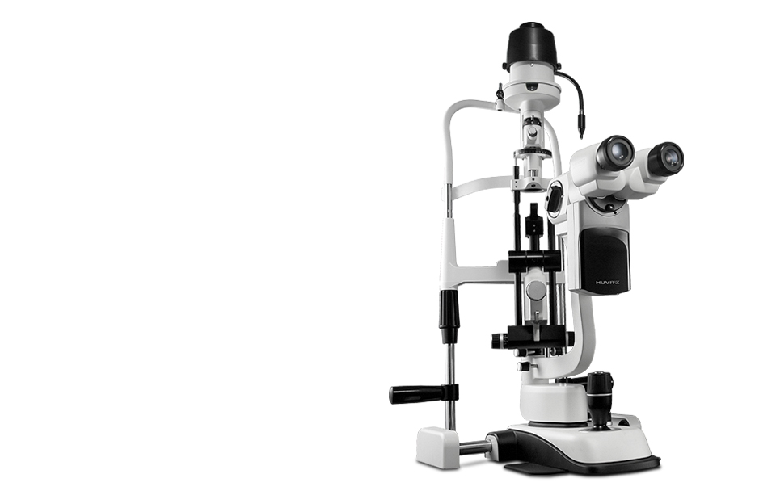

HS-7000(틈새등현미경)
고품질 렌즈로 고화질 이미지는 기본, 자부심까지 만족합니다.
전문가가 선택하는 HIGH-END 슬릿램프-휴비츠 HS시리즈
이 제품은 의료기기이며, 사용상의 주의사항과 사용방법을 잘 읽고 사용하십시오.
(심의번호: 2013-I10-04-1447)
- 
제품소개
- Microscope
- 글로벌 스탠더드 Galilean Converging Binocular Type 광학계를 채택하고 휴비츠만의 정밀 고품질 렌즈 설계로 왜곡 률, 색 수차, 시야범위 등에서 품질우위를 제공합니다.
- Illuination
- 12Volt, 30Watt의 고휘도 발광 할로겐 램프의 광원을 채택, 매우 밝고 선명한 고화질의 이미지를 제공합니다.
- Magnification Control System
- 5단계로 배율 조절이 가능한 Magnification Control Drum 을 적용하여 화질 저하 없이 신속하게 배율 전환이 가능합니다.
- Integrated Control
- Trigger Button 이 장착된 Joystick 으로 미세한 움직임도 쉽게 조절가능하며 Image 장치와 연결하면 모니터를 보며 이미지를 바로 저장할 수 있습니다.
제품사양
| 조명부 | 7000 | 7500 | 5000 | 5500 |
|---|---|---|---|---|
| 슬릿길이(mm) | 0.3~14 | 0.3~12 | 0.3~14 | |
| 슬릿너비(mm) | 0~14mm(continuous) | 0~12mm(continuous) | 0~14mm(continuous) | |
| 슬릿배율 | 1.167x | 1x | 1.167x | |
| 접안배율 | 12.5x | |||
| 필터 | Cobalt Blue, Red-Free, Grey and Heat Absorption | |||
| 슬릿회전 | 0°~180°continuous | |||
| 각도조절 | 0”,5”,10”,15”,20” | 0”~20” continuous | 0”,5”,10”,15”,20” | 0”~20” continuous |
| 검사거리 | 80mm | |||
| 광학부 | ||||
| 현미경 | 5x | |||
| 설계타입 | Galilean Converging Binocular | |||
| 배율조정 | 5 Position Rotating Drum | |||
| 접안부 | 12.5x | |||
| 배율 |
|
|||
| 시야 (mm) | 38.5,22.2, 15.2, 10.5, 6.7 | 38.5, 22.2, 15.2, 10.5, 6.1 | ||
| 동공범위 | 55mm ~ 80 mm | |||
| BASE | ||||
| 상하이동거리 | 28mm | |||
| 수직이동거리 | 78mm | |||
| 수평이동거리 | 98mm | |||
| 미세조정 | 10mm | |||
| 전압 | Free voltage 100-240V AC | |||
| 전압주파수 | 50/60Hz | |||
| 소비전류 | 70VA | |||
| 내부전압 | 12V DC | |||
| 할로겐램프 | 12V 30W | |||
| 주시등램프 | 3.4V 20mA | |||
| 카메라 | ||||
| 이미지센서 | 1/2” Interline CCD | |||
| 이미지사이즈 | up to 1,388 x 1,036 pixels | |||
| 셀사이즈 | 4.65μm x 4.65μm | |||
| 영상포맷 | 8bit or 12bit Raw RGB, YUV 4 : 2 : 2 | |||
| 전송방식 | IEEE 1394 (6pin) | |||
| 전송속도 | 400Mbps | |||
| 처리속도 | 15fps, 7.5fps, 3.75fps | |||
| 렌즈부착 | C-Mount | |||
| 촬영방법 | External Trigger or Software Trigger | |||
| 크기 | 44mm (W) x 29mm (H) x 63mm (D) | |||
| 전력소비량 | 3W (12V DC, from IEEE 1394 cable) | |||
| PC 및 Table은 OPTION입니다. 상기 제품의 디자인과 세부 사항은 기능 향상을 위해 사전 예고없이 변경될 수 있습니다. | ||||